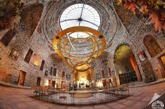
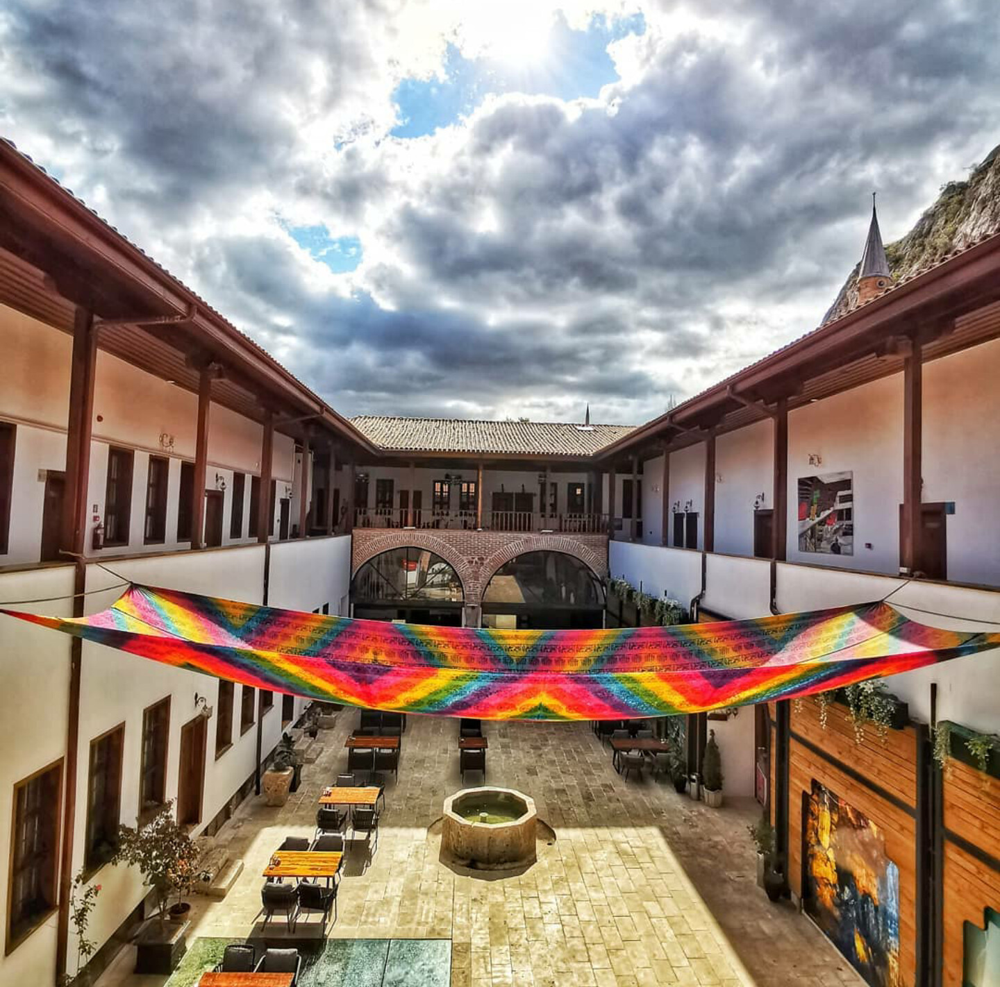

Ana Sayfaya Geri Dön
Tokat'ın Tarihi ve Turistik Yerleri
Tokat, "900 Adımda 900 Yıl" tarihiyle Anadolu'nun en zengin açık hava müzelerinden biridir. Her köşesinde farklı bir medeniyetin izini görmek mümkündür.
 Ballıca Mağarası
Ballıca Mağarası

Yağıbasan Medresesi

Yazmacılar Hanı
Mutlaka Görülmesi Gereken Yerler
- Ballıca Mağarası: Dünyanın en görkemli mağaralarından biri olup, nadir görülen soğan sarkıtlarıyla ve şifalı havasıyla ünlüdür.
- Kaz Gölü: Yüzlerce kuş türüne ev sahipliği yapan, doğa tutkunları ve fotoğrafçılar için eşsiz bir huzur durağıdır.
- Taşhan: 1631 yılında inşa edilen, Anadolu'nun en büyük şehir hanlarından biri olan muhteşem bir Osmanlı mirasıdır.
- Yağıbasan Medresesi: Anadolu'nun ilk tıp eğitimi verilen medreselerinden biri olup, gökyüzüne açılan eşsiz kubbesiyle bilinir.
- Yazmacılar Hanı: Tokat'ın meşhur el sanatı olan yazmacılığın kalbinin attığı, geleneksel motiflerin hayat bulduğu tarihi bir merkezdir.
Tokat'ın tarihi dokusunda kaybolurken kendinizi bir zaman yolculuğunda hissedeceksiniz.